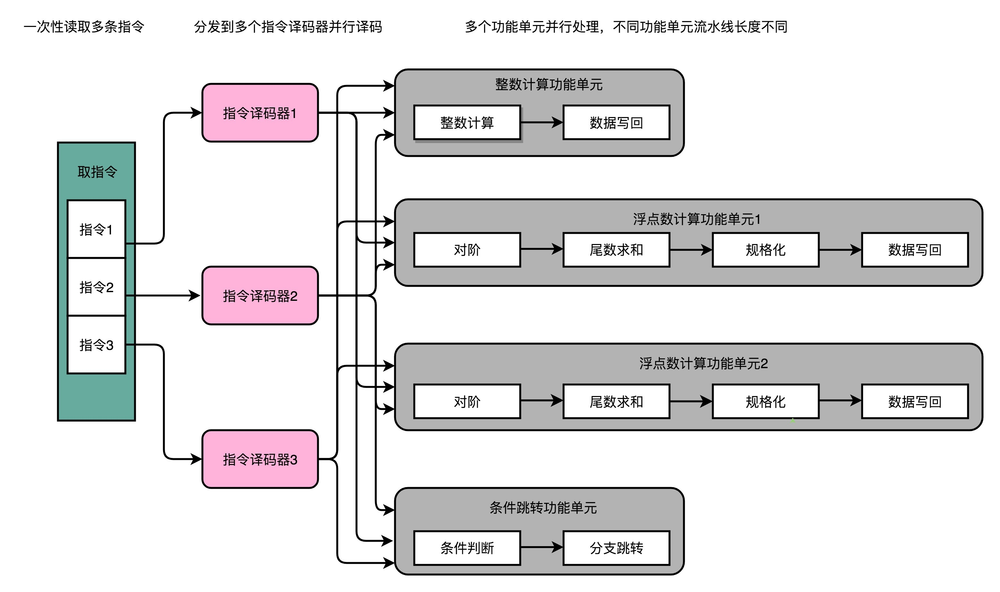
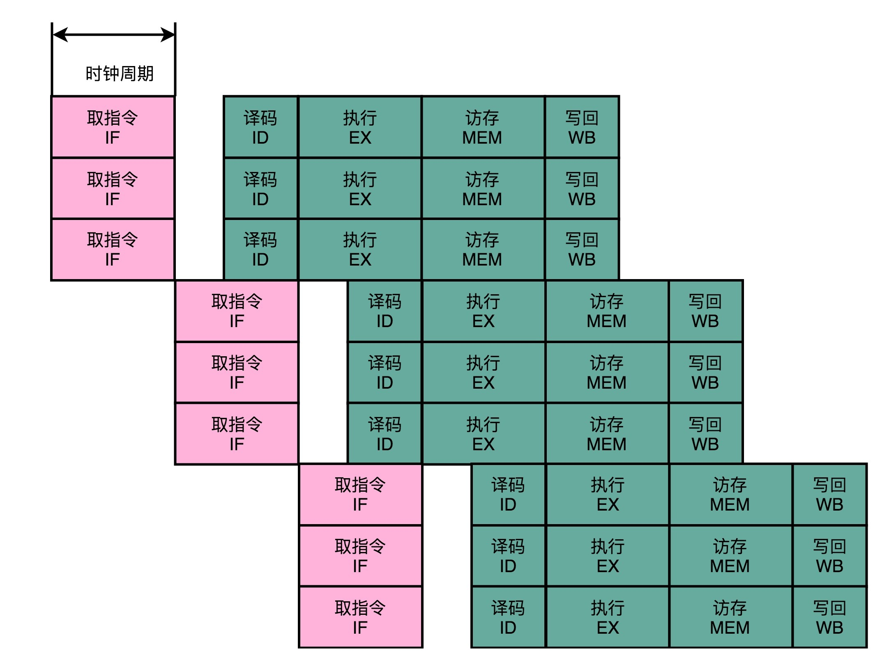
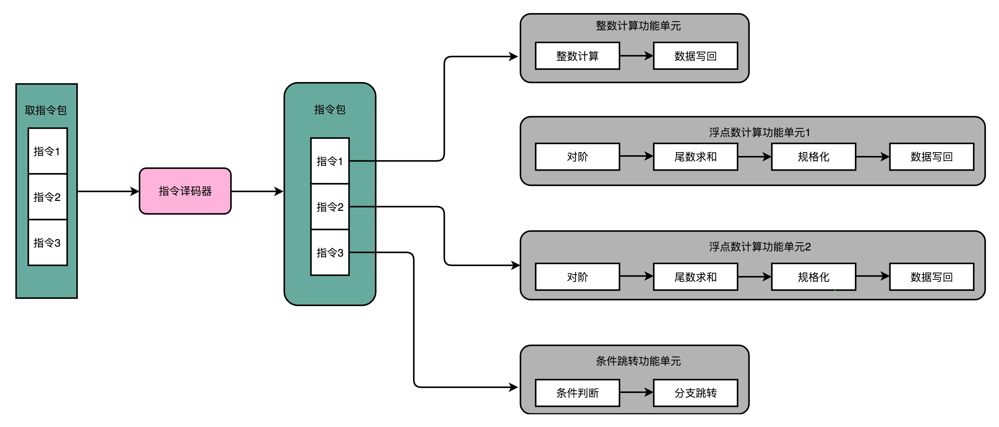
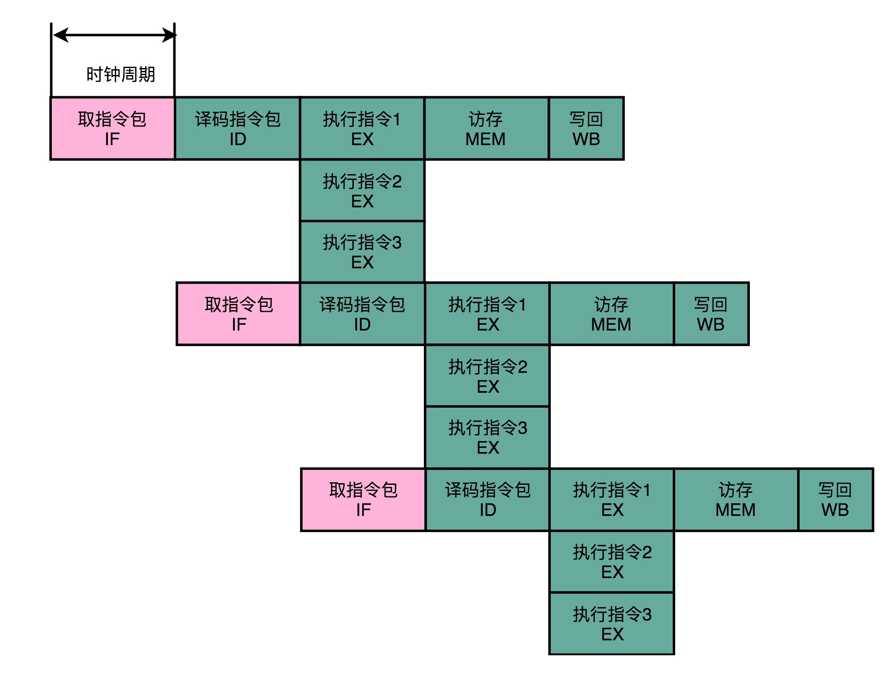

- 00 开篇词 为什么你需要学习计算机组成原理？.md.html
- 01 冯·诺依曼体系结构：计算机组成的金字塔.md.html
- 02 给你一张知识地图，计算机组成原理应该这么学.md.html
- 03 通过你的CPU主频，我们来谈谈“性能”究竟是什么？.md.html
- 04 穿越功耗墙，我们该从哪些方面提升“性能”？.md.html
- 05 计算机指令：让我们试试用纸带编程.md.html
- 06 指令跳转：原来if...else就是goto.md.html
- 07 函数调用：为什么会发生stack overflow？.md.html
- 08 ELF和静态链接：为什么程序无法同时在Linux和Windows下运行？.md.html
- 09 程序装载：“640K内存”真的不够用么？.md.html
- 10 动态链接：程序内部的“共享单车”.md.html
- 11 二进制编码：“手持两把锟斤拷，口中疾呼烫烫烫”？.md.html
- 12 理解电路：从电报机到门电路，我们如何做到“千里传信”？.md.html
- 13 加法器：如何像搭乐高一样搭电路（上）？.md.html
- 14 乘法器：如何像搭乐高一样搭电路（下）？.md.html
- 15 浮点数和定点数（上）：怎么用有限的Bit表示尽可能多的信息？.md.html
- 16 浮点数和定点数（下）：深入理解浮点数到底有什么用？.md.html
- 17 建立数据通路（上）：指令加运算=CPU.md.html
- 18 建立数据通路（中）：指令加运算=CPU.md.html
- 19 建立数据通路（下）：指令加运算=CPU.md.html
- 20 面向流水线的指令设计（上）：一心多用的现代CPU.md.html
- 21 面向流水线的指令设计（下）：奔腾4是怎么失败的？.md.html
- 22 冒险和预测（一）：hazard是“危”也是“机”.md.html
- 23 冒险和预测（二）：流水线里的接力赛.md.html
- 24 冒险和预测（三）：CPU里的“线程池”.md.html
- 25 冒险和预测（四）：今天下雨了，明天还会下雨么？.md.html
- 26 Superscalar和VLIW：如何让CPU的吞吐率超过1？.md.html
- 27 SIMD：如何加速矩阵乘法？.md.html
- 28 异常和中断：程序出错了怎么办？.md.html
- 29 CISC和RISC：为什么手机芯片都是ARM？.md.html
- 30 GPU（上）：为什么玩游戏需要使用GPU？.md.html
- 31 GPU（下）：为什么深度学习需要使用GPU？.md.html
- 32 FPGA、ASIC和TPU（上）：计算机体系结构的黄金时代.md.html
- 33 解读TPU：设计和拆解一块ASIC芯片.md.html
- 34 理解虚拟机：你在云上拿到的计算机是什么样的？.md.html
- 35 存储器层次结构全景：数据存储的大金字塔长什么样？.md.html
- 36 局部性原理：数据库性能跟不上，加个缓存就好了？.md.html
- 37 理解CPU Cache（上）：“4毫秒”究竟值多少钱？.md.html
- 38 高速缓存（下）：你确定你的数据更新了么？.md.html
- 39 MESI协议：如何让多核CPU的高速缓存保持一致？.md.html
- 40 理解内存（上）：虚拟内存和内存保护是什么？.md.html
- 41 理解内存（下）：解析TLB和内存保护.md.html
- 42 总线：计算机内部的高速公路.md.html
- 43 输入输出设备：我们并不是只能用灯泡显示“0”和“1”.md.html
- 44 理解IO_WAIT：IO性能到底是怎么回事儿？.md.html
- 45 机械硬盘：Google早期用过的“黑科技”.md.html
- 46 SSD硬盘（上）：如何完成性能优化的KPI？.md.html
- 47 SSD硬盘（下）：如何完成性能优化的KPI？.md.html
- 48 DMA：为什么Kafka这么快？.md.html
- 49 数据完整性（上）：硬件坏了怎么办？.md.html
- 50 数据完整性（下）：如何还原犯罪现场？.md.html
- 51 分布式计算：如果所有人的大脑都联网会怎样？.md.html
- 52 设计大型DMP系统（上）：MongoDB并不是什么灵丹妙药.md.html
- 53 设计大型DMP系统（下）：SSD拯救了所有的DBA.md.html
- 54 理解Disruptor（上）：带你体会CPU高速缓存的风驰电掣.md.html
- 55 理解Disruptor（下）：不需要换挡和踩刹车的CPU，有多快？.md.html
- 结束语 知也无涯，愿你也享受发现的乐趣.md.html
26 Superscalar和VLIW：如何让CPU的吞吐率超过1？
到今天为止，专栏已经过半了。过去的 20 多讲里，我给你讲的内容，很多都是围绕着怎么提升 CPU 的性能这个问题展开的。
我们先回顾一下第 4 讲，不知道你是否还记得这个公式：
程序的 CPU 执行时间 = 指令数 × CPI × Clock Cycle Time
这个公式里，有一个叫 CPI 的指标。我们知道，CPI 的倒数，又叫作 IPC（Instruction Per Clock），也就是一个时钟周期里面能够执行的指令数，代表了 CPU 的吞吐率。那么，这个指标，放在我们前面几节反复优化流水线架构的 CPU 里，能达到多少呢？
答案是，最佳情况下，IPC 也只能到 1。因为无论做了哪些流水线层面的优化，即使做到了指令执行层面的乱序执行，CPU 仍然只能在一个时钟周期里面，取一条指令。

这说明，无论指令后续能优化得多好，一个时钟周期也只能执行完这样一条指令，CPI 只能是 1。但是，我们现在用的 Intel CPU 或者 ARM 的 CPU，一般的 CPI 都能做到 2 以上，这是怎么做到的呢？
今天，我们就一起来看看，现代 CPU 都使用了什么“黑科技”。
多发射与超标量：同一实践执行的两条指令
之前讲 CPU 的硬件组成的时候，我们把所有算术和逻辑运算都抽象出来，变成了一个 ALU 这样的“黑盒子”。你应该还记得第 13 讲到第 16 讲，关于加法器、乘法器、乃至浮点数计算的部分，其实整数的计算和浮点数的计算过程差异还是不小的。实际上，整数和浮点数计算的电路，在 CPU 层面也是分开的。
一直到 80386，我们的 CPU 都是没有专门的浮点数计算的电路的。当时的浮点数计算，都是用软件进行模拟的。所以，在 80386 时代，Intel 给 386 配了单独的 387 芯片，专门用来做浮点数运算。那个时候，你买 386 芯片的话，会有 386sx 和 386dx 这两种芯片可以选择。386dx 就是带了 387 浮点数计算芯片的，而 sx 就是不带浮点数计算芯片的。
其实，我们现在用的 Intel CPU 芯片也是一样的。虽然浮点数计算已经变成 CPU 里的一部分，但并不是所有计算功能都在一个 ALU 里面，真实的情况是，我们会有多个 ALU。这也是为什么，在第 24 讲讲乱序执行的时候，你会看到，其实指令的执行阶段，是由很多个功能单元（FU）并行（Parallel）进行的。
不过，在指令乱序执行的过程中，我们的取指令（IF）和指令译码（ID）部分并不是并行进行的。
既然指令的执行层面可以并行进行，为什么取指令和指令译码不行呢？如果想要实现并行，该怎么办呢？
其实只要我们把取指令和指令译码，也一样通过增加硬件的方式，并行进行就好了。我们可以一次性从内存里面取出多条指令，然后分发给多个并行的指令译码器，进行译码，然后对应交给不同的功能单元去处理。这样，我们在一个时钟周期里，能够完成的指令就不只一条了。IPC 也就能做到大于 1 了。

这种 CPU 设计，我们叫作多发射（Mulitple Issue）和超标量（Superscalar）。
什么叫多发射呢？这个词听起来很抽象，其实它意思就是说，我们同一个时间，可能会同时把多条指令发射（Issue）到不同的译码器或者后续处理的流水线中去。
在超标量的 CPU 里面，有很多条并行的流水线，而不是只有一条流水线。“超标量“这个词是说，本来我们在一个时钟周期里面，只能执行一个标量（Scalar）的运算。在多发射的情况下，我们就能够超越这个限制，同时进行多次计算。

你可以看我画的这个超标量设计的流水线示意图。仔细看，你应该能看到一个有意思的现象，每一个功能单元的流水线的长度是不同的。事实上，不同的功能单元的流水线长度本来就不一样。我们平时所说的 14 级流水线，指的通常是进行整数计算指令的流水线长度。如果是浮点数运算，实际的流水线长度则会更长一些。
Intel 的失败之作：安腾的超长指令字设计
无论是之前几讲里讲的乱序执行，还是现在更进一步的超标量技术，在实际的硬件层面，其实实施起来都挺麻烦的。这是因为，在乱序执行和超标量的体系里面，我们的 CPU 要解决依赖冲突的问题。这也就是前面几讲我们讲的冒险问题。
CPU 需要在指令执行之前，去判断指令之间是否有依赖关系。如果有对应的依赖关系，指令就不能分发到执行阶段。因为这样，上面我们所说的超标量 CPU 的多发射功能，又被称为动态多发射处理器。这些对于依赖关系的检测，都会使得我们的 CPU 电路变得更加复杂。
于是，计算机科学家和工程师们就又有了一个大胆的想法。我们能不能不把分析和解决依赖关系的事情，放在硬件里面，而是放到软件里面来干呢？
如果你还记得的话，我在第 4 讲也讲过，要想优化 CPU 的执行时间，关键就是拆解这个公式：
程序的 CPU 执行时间 = 指令数 × CPI × Clock Cycle Time
当时我们说过，这个公式里面，我们可以通过改进编译器来优化指令数这个指标。那接下来，我们就来看看一个非常大胆的 CPU 设计想法，叫作超长指令字设计（Very Long Instruction Word，VLIW）。这个设计呢，不仅想让编译器来优化指令数，还想直接通过编译器，来优化 CPI。
围绕着这个设计的，是 Intel 一个著名的“史诗级”失败，也就是著名的 IA-64 架构的安腾（Itanium）处理器。只不过，这一次，责任不全在 Intel，还要拉上可以称之为硅谷起源的另一家公司，也就是惠普。
之所以称为“史诗”级失败，这个说法来源于惠普最早给这个架构取的名字，显式并发指令运算（Explicitly Parallel Instruction Computer），这个名字的缩写EPIC，正好是“史诗”的意思。
好巧不巧，安腾处理器和和我之前给你介绍过的 Pentium 4 一样，在市场上是一个失败的产品。在经历了 12 年之久的设计研发之后，安腾一代只卖出了几千套。而安腾二代，在从 2002 年开始反复挣扎了 16 年之后，最终在 2018 年被 Intel 宣告放弃，退出了市场。自此，世上再也没有这个“史诗”服务器了。
那么，我们就来看看，这个超长指令字的安腾处理器是怎么回事儿。
在乱序执行和超标量的 CPU 架构里，指令的前后依赖关系，是由 CPU 内部的硬件电路来检测的。而到了超长指令字的架构里面，这个工作交给了编译器这个软件。

我从专栏第 5 讲开始，就给你看了不少 C 代码到汇编代码和机器代码的对照。编译器在这个过程中，其实也能够知道前后数据的依赖。于是，我们可以让编译器把没有依赖关系的代码位置进行交换。然后，再把多条连续的指令打包成一个指令包。安腾的 CPU 就是把 3 条指令变成一个指令包。

CPU 在运行的时候，不再是取一条指令，而是取出一个指令包。然后，译码解析整个指令包，解析出 3 条指令直接并行运行。可以看到，使用超长指令字架构的 CPU，同样是采用流水线架构的。也就是说，一组（Group）指令，仍然要经历多个时钟周期。同样的，下一组指令并不是等上一组指令执行完成之后再执行，而是在上一组指令的指令译码阶段，就开始取指令了。
值得注意的一点是，流水线停顿这件事情在超长指令字里面，很多时候也是由编译器来做的。除了停下整个处理器流水线，超长指令字的 CPU 不能在某个时钟周期停顿一下，等待前面依赖的操作执行完成。编译器需要在适当的位置插入 NOP 操作，直接在编译出来的机器码里面，就把流水线停顿这个事情在软件层面就安排妥当。
虽然安腾的设想很美好，Intel 也曾经希望能够让安腾架构成为替代 x86 的新一代架构，但是最终安腾还是在前前后后折腾将近 30 年后失败了。2018 年，Intel 宣告安腾 9500 会在 2021 年停止供货。
安腾失败的原因有很多，其中有一个重要的原因就是“向前兼容”。
一方面，安腾处理器的指令集和 x86 是不同的。这就意味着，原来 x86 上的所有程序是没有办法在安腾上运行的，而需要通过编译器重新编译才行。
另一方面，安腾处理器的 VLIW 架构决定了，如果安腾需要提升并行度，就需要增加一个指令包里包含的指令数量，比方说从 3 个变成 6 个。一旦这么做了，虽然同样是 VLIW 架构，同样指令集的安腾 CPU，程序也需要重新编译。因为原来编译器判断的依赖关系是在 3 个指令以及由 3 个指令组成的指令包之间，现在要变成 6 个指令和 6 个指令组成的指令包。编译器需要重新编译，交换指令顺序以及 NOP 操作，才能满足条件。甚至，我们需要重新来写编译器，才能让程序在新的 CPU 上跑起来。
于是，安腾就变成了一个既不容易向前兼容，又不容易向后兼容的 CPU。那么，它的失败也就不足为奇了。
可以看到，技术思路上的先进想法，在实际的业界应用上会遇到更多具体的实践考验。无论是指令集向前兼容性，还是对应 CPU 未来的扩展，在设计的时候，都需要更多地去考虑实践因素。
总结延伸
这一讲里，我和你一起向 CPU 的性能发起了一个新的挑战：让 CPU 的吞吐率，也就是 IPC 能够超过 1。
我先是为你介绍了超标量，也就是 Superscalar 这个方法。超标量可以让 CPU 不仅在指令执行阶段是并行的，在取指令和指令译码的时候，也是并行的。通过超标量技术，可以使得你所使用的 CPU 的 IPC 超过 1。
在 Intel 的 x86 的 CPU 里，从 Pentium 时代，第一次开始引入超标量技术，整个 CPU 的性能上了一个台阶。对应的技术，一直沿用到了现在。超标量技术和你之前看到的其他流水线技术一样，依赖于在硬件层面，能够检测到对应的指令的先后依赖关系，解决“冒险”问题。所以，它也使得 CPU 的电路变得更复杂了。
因为这些复杂性，惠普和 Intel 又共同推出了著名的安腾处理器。通过在编译器层面，直接分析出指令的前后依赖关系。于是，硬件在代码编译之后，就可以直接拿到调换好先后顺序的指令。并且这些指令中，可以并行执行的部分，会打包在一起组成一个指令包。安腾处理器在取指令和指令译码的时候，拿到的不再是单个指令，而是这样一个指令包。并且在指令执行阶段，可以并行执行指令包里所有的指令。
虽然看起来，VLIW 在技术层面更具有颠覆性，不仅仅只是一个硬件层面的改造，而且利用了软件层面的编译器，来组合解决提升 CPU 指令吞吐率的问题。然而，最终 VLIW 却没有得到市场和业界的认可。
惠普和 Intel 强强联合开发的安腾处理器命运多舛。从 1989 开始研发，直到 2001 年才发布了第一代安腾处理器。然而 12 年的开发过程后，第一代安腾处理器最终只卖出了几千套。而 2002 年发布的安腾 2 处理器，也没能拯救自己的命运。最终在 2018 年，Intel 宣布安腾退出市场。自此之后，市面上再没有能够大规模商用的 VLIW 架构的处理器了。
推荐阅读
关于超标量和多发射的相关知识，你可以多看一看《计算机组成与设计：硬件 / 软件接口》的 4.10 部分。其中，4.10.1 和 4.10.2 的推测和静态多发射，其实就是今天我们讲的超长指令字（VLIW）的知识点。4.10.2 的动态多发射，其实就是今天我们讲的超标量（Superscalar）的知识点。